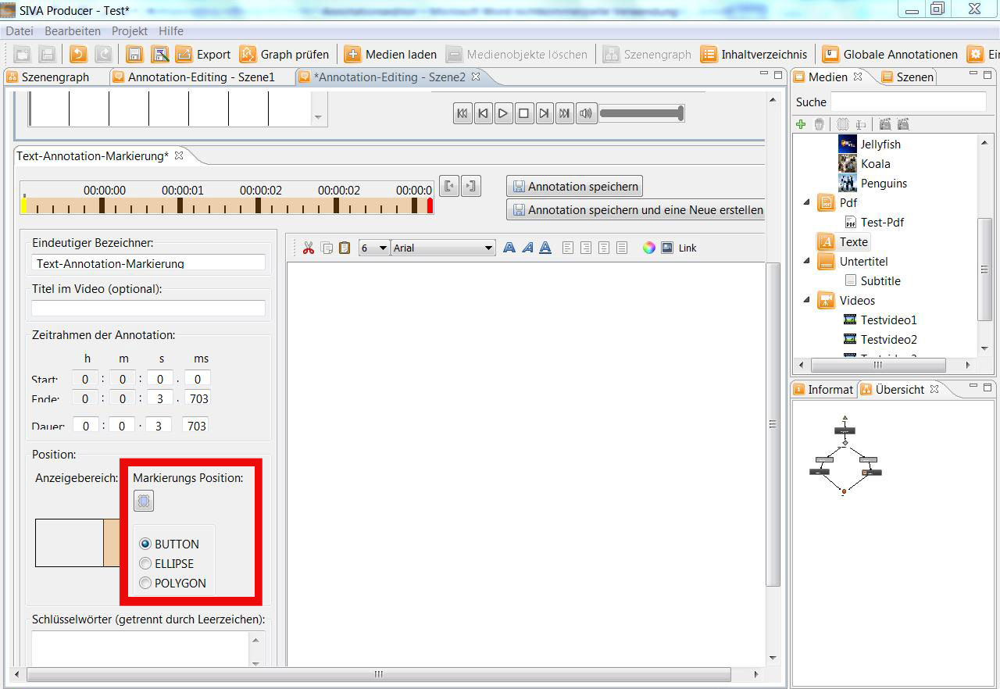
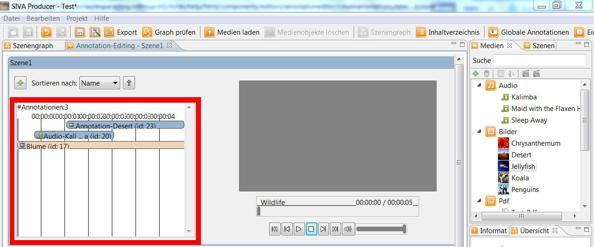

Erstellen von Szenen-Annotationen
Der SIVA Producer unterstützt das Erstellen verschiedener Annotationstypen. Dies sind
Audio, Bild, Richtext, Video und PDF.
Im Folgenden erfahren Sie:
Öffnen des Annotationseditors
Es bestehen zwei Möglichkeiten, um eine Annotation zu einer Szene hinzuzufügen:
1) Annotationen können aus dem Medien-Repository per Drag and Drop bei gedrückter linker
Maustaste auf eine Szene im Szenengraphen gezogen werden.

Im Folgenden öffnet sich ein Fenster in dem die Annotation mit einem Namen versehen werden kann. Wird kein Name
eingegeben, wird dieser automatisch vom Programm vergeben.

Um die Annotation bearbeiten zu können, muss man die Szene im Szenengraphen auf
 anklicken. Nun öffnet sich ein neues Fenster.
anklicken. Nun öffnet sich ein neues Fenster.

2) Eine zweite Methode wäre es im Szenengraph in der Szene, der man eine Annotation hinzufügen will, direkt auf den Annoationsbutton
 (bereits Annotationen an Szene angehängt) bzw.
(bereits Annotationen an Szene angehängt) bzw.
 (noch keine Annotationen an Szene angehängt) zu klicken.
(noch keine Annotationen an Szene angehängt) zu klicken.

Es öffnet sich ein neues Fenster, indem Annotationen hinzugefügt und bearbeitet werden können:

Neue Annotation hinzufügen
Um eine neue Annotation zu erstellen, muss man auf
klicken. Danach hat man die Wahl zwischen den Standard-Annotationen und Markierungs-Annotationen.
Die Standard-Annotationen werden im Projekt automatisch zu dem Zeitpunkt an dem sie gesetzt wurden, angezeigt und abgespielt.
Wurde eine Markierungs-Annotation erstellt, so erscheint zunächst ein Symbol, welches vom Benutzer angeklickt werden kann,
damit die Annotation angezeigt und abgespielt wird.

Nun kann man die verschiedenen Annotationstypen hinzufügen:
Bei den Markierungs-Annotationen kann man nur auswählen zwischen:
- Audio-Annotation
- Picture-Annotation
- Richtext-Annotation
- Video-Annotation
- PDF-Annotation
Eine Annotation besteht immer aus einem Inhalt, einer Dauer und einem Namen. Je nach Art
der Annotation kann der Inhalt im Programm verändert werden. Der Name der Annotation kann
durch den Benutzer angegeben werden. Wird kein Name eingegeben, wird dieser automatisch vom
Programm vergeben.
Einstellungen und Anzeigebereiche
Bei einer Annotation können folgende Einstellungen festgelegt werden:
- Szene an die die Annotation angehängt werden soll (wird im Szenengraphen festgelegt)
- Art der Annotation: Audio, Bild, Richtext, Untertitel, Video, PDF
- Startzeitpunkt der Annotation
- Endzeitpunkt der Annotation
- Name der Annotation (wird vom System vergeben, falls der Benutzer keinen festlegt)
- Anzeigebereich im Player
- Öffnen eines neuen Fensters zum Anzeigen der Annotation
Start- und Endzeit festlegen
Bei jeder Annotation müssen Start- und Endzeitpunkt festgelegt werden.
Dies kann auf verschiedene Arten erfolgen:

- Eine Möglichkeit ist sie direkt im Zeiteingabefeld einzugeben.
- Sie können die Startzeit auch einfach mit einem Klick der linken Maustaste und die Endzeit mit einem Klick der
rechten Maustaste im Zeitbalken setzen.
- Des Weiteren können Sie den gelben Marker für das Setzen des Startzeitpunkts und den roten Merker für das Setzen
des Endzeitpunkts verschieben indem Sie die linke Maustaste dabei gedrückt halten.
- Außerdem können Sie im oberen Fenster den grauen Marker an den gewünschten Start- und Endpunkt bringen und mit Hilfe
der Buttons "Startpunkt" und "Endpunkt" festlegen.
Anzeigebereich der Annotation
Außerdem kann die Position geändert werden, an der die Annotation später im fertigen Video angezeigt werden soll.
Dies kann in einem der Randbereiche oder in einem eigenen Fenster sein.
Mittels Doppelklick auf den Anzeigebereich öffnet sich ein neues Fenster indem man die Position und die Größe der
Videoanntoation bestimmen kann.

Hat man sich für eine Markierungs-Annotation entschieden, so erscheint zusätzlich noch die Auswahl des Symbols, das im
fertigen Projekt erscheinen soll. Hierbei kann zwischen Knopf, Ellypse und Polygon gewählt werden.

 Ist die linke Fläche orange markiert, so erscheint die Annotation später direkt auf dem Bild.
Ist die linke Fläche orange markiert, so erscheint die Annotation später direkt auf dem Bild. Ist die rechte Fläche eingefärbt, so kann die Annotation später am rechten Rand aufgeklappt werden.
Ist die rechte Fläche eingefärbt, so kann die Annotation später am rechten Rand aufgeklappt werden.- Hier kann die Leiste mit der Annotation auf- und zugeklappt werden.
Im fertigen Projekt könnte das wie folgt aussehen:

Schlüsselwörter
Bei jeder neu erstellten Annotation können Schlüsselwörter hinzugefügt werden, die die Suche erleichtern sollen.
Annotationsverhalten
Neben den üblichen Einstellugen kann für jede Annotation bestimmt werden, wie sie sich im fertigen Projekt verhalten soll.
Hierzu kann man auswählen, ob die Annotation deaktiviert oder das Hauptvideo angehalten werden kann.
Sowohl bei Audio- als auch bei Video-Annotationen kann man zusätzlich noch auswählen, ob das Hauptvideo während der Ton der
erstellten Annotation abgespielt wird, stummgeschaltet werden soll.

Speichern der Annotation
Sind alle Einstellungen vorgenommen, wird die Annotation durch einen Klick auf den
Speichern-Button gespeichert. Wollen Sie die Annotation speichern und gleich darauf eine weitere erstellen, so klicken Sie auf
"Annotation speichern und eine Neue erstellen".

Ab sofort wird die Annotation im Zeitleistenbereich des oberen Fensters angezeigt.

Löschen einer Annotation
Mittels Rechtsklick auf den Balken der die gewünschte Annotation anzeigt, kann eine Annotation auch wieder gelöscht werden.